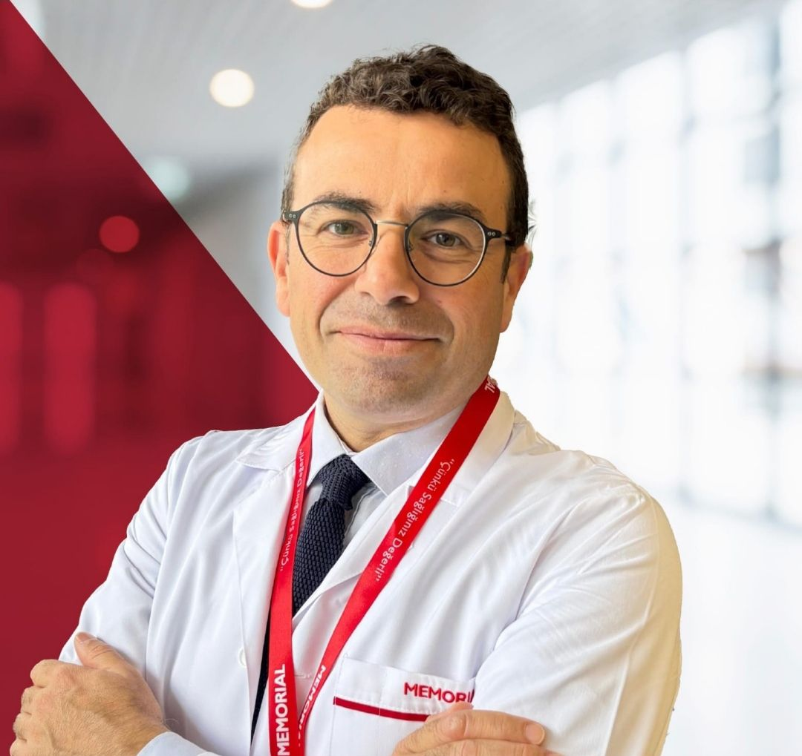
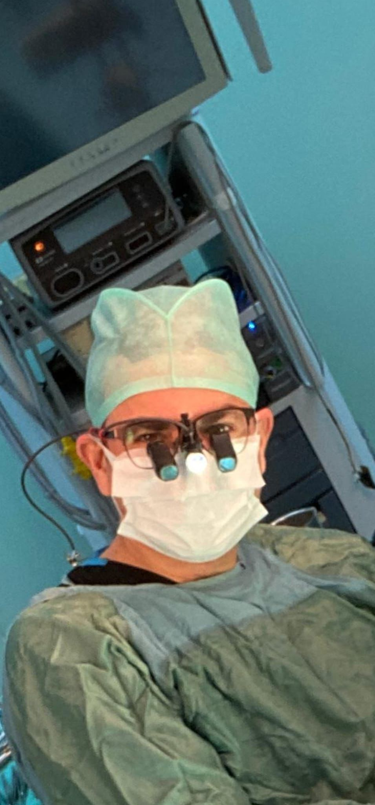

Uzmanlık Alanlarım
Sunduğum Cerrahi Hizmetler
Kardiyovasküler sistemin tüm hastalıklarında güncel ve kanıta dayalı cerrahi yöntemlerle tedavi sunmaktayım.
Kalp ve Damar Cerrahisi · Ankara
Robotik kalp cerrahisi ve minimal invaziv teknikler başta olmak üzere kardiyovasküler hastalıkların tüm cerrahi tedavisinde kapsamlı deneyim. Türkiye'de robotik kalp ameliyatı gerçekleştiren sayılı merkezlerden birinde hizmet vermekteyim.

Kardiyovasküler sistemin tüm hastalıklarında güncel ve kanıta dayalı cerrahi yöntemlerle tedavi sunmaktayım.

2003 yılında Gülhane Askeri Tıp Fakültesi'nden mezun oldum. Gülhane Askeri Tıp Akademisi'nde tamamladığım uzmanlık eğitiminin ardından 2011'den bu yana kalp ve damar cerrahisi pratiği yapmaktayım.
Robotik kalp cerrahisi başta olmak üzere minimal invaziv tekniklere odaklanmaktayım. 2025 yılından itibaren Memorial Ankara Hastanesi Kalp Damar Cerrahisi bölümünde görev yapmaktayım.
Kardiyovasküler sağlığınızla ilgili sorularınız için benimle iletişime geçin.
İletişime Geçin